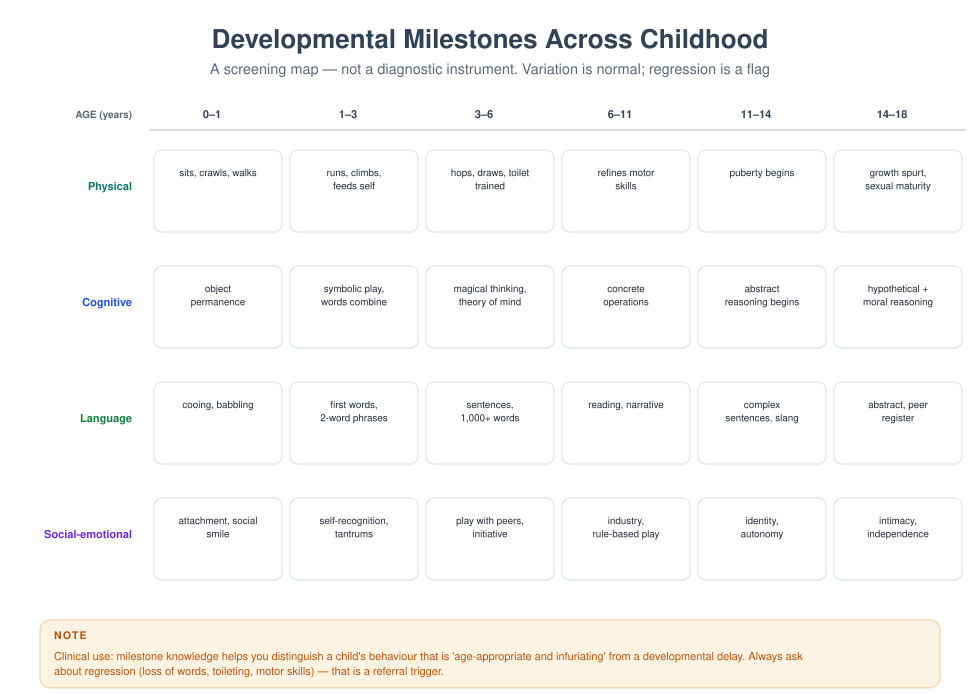

MFT 703 — Human Development Across the Lifespan
Course leader's summary. You cannot assess a family without knowing what is developmentally ordinary. This course covers physical, cognitive, language, social-emotional and moral development from conception to later life, always in family and cultural context — and it trains you to distinguish normal variation, delay, regression and symptom.
How to use this book
Development is not a list of ages; it is a set of tasks and a set of negotiations between a person and their family. Each week here gives you the developmental task, the family task that accompanies it, what goes wrong, and what it looks like in a consulting room. Use the milestone grid (Figure 23) as a reference you return to, not as a checklist to memorise.
1. Course description
Human development is the backbone of family assessment. A two-year-old's tantrum, a nine-year-old's lying, and a fifteen-year-old's secrecy are not three versions of "defiance": they are three different developmental moments that require three different responses. Clinicians who do not know this either pathologise normal development or miss genuine delay.
The course integrates neurodevelopmental, cognitive, attachment, systemic and cultural perspectives. It treats development as bidirectional: children shape parents as much as parents shape children, and families develop too (a theme developed in MFT 719).
2. Learning outcomes
| # | Outcome | Assessed |
|---|---|---|
| LO1 | Describe physical, cognitive, language and social-emotional milestones from 0–18 and in adulthood | Exam |
| LO2 | Distinguish normal variation, delay, regression and symptom in a presenting concern | Case assignment |
| LO3 | Apply attachment theory to family assessment | Case assignment, exam |
| LO4 | Explain developmental tasks of adulthood and later life and their family implications | Exam |
| LO5 | Evaluate developmental theory critically, including its cultural assumptions | Essay |
| LO6 | Communicate developmental information to parents without jargon or alarm | Skills assessment |
3. Assessment
| Component | Weight | Due |
|---|---|---|
| Developmental case analysis (2,000 words) | 30% | Week 8 |
| Parent-feedback role-play (10 min, observed) | 20% | Week 11 |
| Written examination | 50% | Week 16 |
4. The fifteen-week plan
| Week | Topic | Practical |
|---|---|---|
| 1 | Why developmental knowledge is clinical knowledge | Milestone self-audit |
| 2 | Prenatal development, temperament and the transition to parenthood | Temperament interview |
| 3 | Infancy: attachment, synchrony, regulation | Still-face observation |
| 4 | Toddlerhood: autonomy, language, limit-setting | Tantrum consultation role-play |
| 5 | Early childhood: play, theory of mind, initiative | Play observation |
| 6 | Middle childhood: industry, peers, school, self-concept | School-refusal case |
| 7 | Adolescence I: puberty, identity, autonomy | Adolescent interview |
| 8 | Adolescence II: risk, peers, digital life, mental health | Risk/development differential |
| 9 | Adult development: intimacy, work, generativity | Life-structure interview |
| 10 | Couple development across the lifespan | Couple timeline exercise |
| 11 | Parenting across stages; communicating with parents | Observed parent feedback |
| 12 | Later life: cognition, loss, caregiving, legacy | Caregiver family meeting |
| 13 | Culture, poverty and development | Critical reading seminar |
| 14 | When development goes wrong: delay, disorder, trauma | Differential diagnosis workshop |
| 15 | Integration: the developmental lens in assessment | Case presentations |
Week 1 — Why developmental knowledge is clinical knowledge
Three clinical errors are prevented by developmental literacy:
- Pathologising the ordinary. A two-year-old who says "no" to everything is doing the developmental task of autonomy, not manipulating the family.
- Missing the abnormal. A five-year-old who has lost previously acquired language is not "being difficult"; regression is a red flag requiring urgent referral.
- Mis-timing the intervention. A parent is told to "reason with" a three-year-old whose prefrontal circuitry cannot yet support the reasoning demanded. The intervention fails and the parent concludes they are failing.
Four categories you must distinguish — this distinction recurs in every case assignment:
| Category | Definition | Example |
|---|---|---|
| Normal variation | Within the expected range, differing in style and pace | Walking at 11 months vs 15 months |
| Delay | Functioning below the expected range but progressing | No words at 24 months, but progressing |
| Regression | Loss of previously acquired skill | A four-year-old stops speaking |
| Symptom | Behaviour that signals distress rather than development | New soiling at seven after a bereavement |

1.1 The lecture in ninety minutes
| Minutes | Segment | What the lecturer does | What students do |
|---|---|---|---|
| 0–10 | The three errors | Three cases in which developmental ignorance produced harm | Name the error in each case |
| 10–25 | Development as negotiation | The person's task and the family's task, side by side | Write the pair of tasks for one age |
| 25–40 | The four categories | Normal variation, delay, regression, symptom, tested on video clips | Classify eight clips |
| 40–55 | The screening map | The milestone grid, used as a reference rather than a checklist | Locate a real child on the grid |
| 55–70 | What the grid cannot tell you | Culture, opportunity, illness, trauma, family organisation | List five things a milestone cannot show |
| 70–82 | Talking to parents | The sentence that informs without alarming | Rewrite three alarming sentences |
| 82–90 | Why this course is a clinical course | The assessment, the case analysis, the exam | Choose a family for the case analysis |
The teaching decision that makes the week work. The week must establish a habit of mind, not a body of facts: before any behaviour is judged, ask what is the developmental task here, and whose task is it? The lecture should therefore work from three video clips of the same behaviour at different ages — a child refusing to share at two, at six and at thirteen — and let the class discover that the identical act means three different things and requires three different responses. The facts about milestones can be read; the habit must be demonstrated.
The sentence the lecture must land. "Behaviour is only meaningful in relation to a developmental task." A student who can look at a nine-year-old's lying and ask what task the lying is serving — rather than whether the child is honest — has begun to think developmentally, which is the whole of this course's foundation and the first line of every case analysis they will write for the next fifteen weeks.
1.2 Core concepts
Development as a set of tasks. Each stage of life presents a person with a task — to become attached, to become autonomous, to become competent, to become oneself, to become a partner, to become a parent, to become old — and each task requires a negotiation with the family. The task language comes from Erikson, and this course uses it because it is clinically usable: it converts a behaviour into a question about what the person is trying to achieve, and a question about what the family is being asked to allow.
Development as bidirectional. The child shapes the parent as surely as the parent shapes the child. A temperamentally reactive infant produces a more cautious mother; a mother's depression produces a more withdrawn infant; and the two effects are not separable, which is why the clinical unit is the relationship rather than the individual. This is the course's central systemic claim, and it is the reason the course belongs in a family therapy programme rather than in a psychology department.
Development as a negotiation between tasks. At every stage there are two tasks: the person's and the family's. The toddler's task is autonomy; the family's task is to allow autonomy while keeping the child safe. The adolescent's task is identity; the family's task is to tolerate the adolescent's separateness without abandoning them. Most presenting problems in family therapy are a stalled negotiation between the two, and the therapist's developmental question is: which task is stalled, and whose?
The four categories. Normal variation (within range, differing in style and pace); delay (below range, but progressing); regression (loss of an acquired skill); and symptom (behaviour that signals distress rather than development). The categories are clinical instruments, and their misuse produces the three errors listed above. The distinction between delay and regression is the most urgent: delay usually allows assessment over weeks, and regression demands referral within days.
Normative and non-normative events. Normative events are those expected at a stage — starting school, puberty, leaving home, retirement. Non-normative events are unexpected — a parent's death, a move, an illness, a war, a divorce. The family life cycle literature (MFT 719) describes the normative; the clinician's task is to assess how a family's non-normative events have intersected with the normative ones, because that intersection is where most symptoms live.
The developmental history as a clinical instrument. A developmental history is not a form; it is the most efficient way to locate a family's difficulty in time. Not "was he a difficult baby?" but "when did this start, what else was happening then, and what changed at that point?" The history converts a presenting complaint into a chronology, and the chronology usually shows that the symptom began at a transition — which tells the therapist where to look.
Screening is not diagnosis. A milestone grid identifies children who need a fuller assessment. It does not diagnose, and it cannot distinguish a child who is late because of a global delay from one who is late because of deprivation, illness, trauma or a family in crisis. A clinician who treats the grid as a diagnostic instrument will refer children who are developing normally and miss children whose development is being distorted by their circumstances.
Culture, opportunity and the milestone. Milestones describe what children do when they are given the conditions to do it. A child who has not learned to count by six may be delayed, or may never have been taught; a child who does not speak in the clinic may be shy, or may speak a different language at home, or may have been told not to speak to strangers. The clinical question is always: what has this child had the opportunity to learn, from whom, in what language?
Risk and resilience. The literature's most useful finding for family therapists: the number of risk factors matters less than the balance between risk and protective factors, and the single most powerful protective factor is a relationship with at least one consistently responsive adult. That finding is the developmental justification for family therapy, and it should be quoted in every assessment that identifies a child at risk.
1.2a The developmental history, asked well
The instrument the whole course depends on, and the one most often performed as a form. Eleven questions, each with what it is for.
One — "start at the beginning: was this a planned pregnancy, and how was it for you?" For: the parents' state at the child's beginning, which predicts a good deal about the relationship's foundation. An unplanned pregnancy in a hostile household is not a verdict; it is information.
Two — "how was the birth, and how were the first weeks?" For: birth trauma, prematurity, a mother's illness, a period of separation. The question also signals that the therapist is interested in the parents' experience, not only the child's.
Three — "who was at home in the first year, and who helped?" For: the caregiving network, which in many families is wider than the parents, and which is often invisible in the referral.
Four — "when did he first smile, sit, walk, and say a word?" For: the developmental trajectory, asked in ordinary language rather than as a checklist. Parents remember these with surprising accuracy, and their confidence in answering is itself informative.
Five — "was he different from your other children, and in what way?" For: the comparison parents make spontaneously, and the meaning they have given it.
Six — "when did you first become worried, and what made you worried then?" For: the starting point of the parents' concern, which is frequently earlier than the referral, and the event that converted a characteristic into a problem.
Seven — "what was happening in the family at that time?" For: the intersection of the child's development with the family's non-normative events. This is the question that produces the chronology's turning points.
Eight — "who has said what about it — school, clinic, family?" For: the descriptions already attached, and their authority. The answer tells the therapist what the family have been told, by whom, and how they have absorbed it.
Nine — "what have you tried, and what happened?" For: the family's own experiments, which are usually more numerous and more thoughtful than the referral suggests.
Ten — "what does he do well, and what does he love?" For: the competence description, which the referral will not contain, and which the therapy will need.
Eleven — "what would you want me to understand that I have not asked about?" For: the question the family have been waiting for, which is often where the real referral is.
How the questions are used in the session. Not read out in sequence; woven into the first forty minutes, in the family's language, with the child present where possible and asked directly at least three times. The therapist writes the chronology on a single sheet with dates, and shows it to the family at the end: "this is what I have understood; what have I got wrong?" The correction is the first collaborative act.
1.3 The clinical method: from behaviour to task
A four-step method that the rest of the course will use, and that a student can apply to any presenting behaviour.
Step one — describe the behaviour, precisely and without interpretation. Not "he is defiant" but "when his mother asks him to put his shoes on, he says no, sits down, and after ninety seconds his mother puts them on". The description should be filmable, dated, and observed in more than one setting where possible.
Step two — locate it developmentally. What is the expected behaviour at this age, in this culture, for a child with this history? The milestone grid gives the range; the developmental history gives this child's trajectory; the family's account gives the meaning. The output of this step is one of five statements: within normal variation; delayed but progressing; a regression; a symptom of distress; or impossible to tell without more information.
Step three — identify the task. What is the child trying to achieve, and what is the family being asked to allow? A nine-year-old's defiance may be an attempt at autonomy in a family where autonomy is punished; a two-year-old's tantrum is the task itself, not a failure of it; a fourteen-year-old's secrecy is the beginning of a private life. The task is not a hypothesis about cause; it is a description of what the behaviour is for, and it can be stated to the family in their own language.
Step four — test the formulation against the family's response. If the behaviour is an autonomy struggle, the family's response to a small increase in the child's choices should be observable within a week or two. If it does not change, the formulation is wrong, and the therapist revises it rather than pressing the family harder. This step is what distinguishes a developmental formulation from a developmental label.
Worked, briefly. The behaviour: a seven-year-old soiling again after two years of continence. Step two: regression, not delay, and therefore a signal. Step three: the task is not autonomy but the management of an experience the child cannot name — and the chronology shows the soiling began when the father moved out. Step four: the formulation predicts that the soiling will reduce as the child is given a way to speak about the departure, and the prediction can be tested in four sessions.
The method's use in the case assignment. The 30% developmental case analysis asks for exactly these four steps, applied to one child or adolescent, with the developmental history and a formulation. A student who follows the method will produce a defensible analysis; a student who begins with a diagnosis will produce a checklist.
1.4 Techniques: the four instruments of this course
The milestone grid, used as a reference. The grid (Figure 1.1) gives ranges by domain — gross motor, fine motor, language, social-emotional, cognitive. It is used in three ways: to locate a child's trajectory; to identify the domains in which the parents' concern is concentrated; and to notice what the parents have not mentioned, which is sometimes the more important finding. It is not used to score a child, and a therapist who reads the grid out to a parent has misunderstood its purpose.
The developmental timeline, drawn on one sheet. A horizontal line with the child's age marked in years, and above it the events the family describe: births, moves, illnesses, separations, deaths, school changes, and the points at which the presenting behaviour began or changed. The drawing is done with the family, in the session, and it is the single most useful artefact of a developmental assessment. Its power is visual: families see the coincidence of a symptom's onset with an event, which no amount of questioning produces as convincingly.
The three-setting comparison. Ask what the behaviour looks like at home, at school (or nursery, or church), and with a particular person — usually a grandmother, an aunt or a favourite teacher. The comparison answers the question the clinic cannot: is this behaviour a property of the child or of a relationship? A child who is silent at home and fluent at school is not a child with a language disorder.
The ordinary-language formulation. The therapist's developmental understanding, converted into one or two sentences a parent can use: "he is doing what six-year-olds do — testing whether the rules are the same when you are tired — and the useful response is to keep the rule and not to explain it at length." The formulation is the intervention, and its quality is judged by whether the parent can repeat it accurately a week later.
The developmental question, as a habit. "What would you expect a child of this age to be doing?" asked of the parents before the therapist offers an opinion. The question does three things: it elicits the family's developmental theory (which is often accurate), it reveals the standard against which the child is being judged, and it positions the therapist as a collaborator rather than an authority.
1.4a Two timelines, drawn and read
Timeline one — a developmental problem that is not a developmental disorder.
The case. Chidi, 6, referred by his school for "immaturity and poor concentration". The family: mother (29), father (34, works away), a new baby of four months, and a grandmother who has moved in to help.
The timeline. Birth, unremarkable. Walking at 14 months, first words at 15 months, sentences at 26 months — all within range. Nursery at three, described as "a pleasure". School at five, settled. At five years six months: the baby is born. At five years eight months: the grandmother moves in. At five years nine months: the school reports "immaturity".
The reading. Every developmental marker is within range, and there is no regression of an acquired skill. What changed was the household: a new baby, a grandmother, and a mother whose attention is now divided three ways. The behaviour the school calls immaturity is a six-year-old's attempt to reclaim a position in a household that has reorganised without him.
The formulation, in ordinary language. "He is not behind. He is doing what a six-year-old does when a baby arrives and the house fills up: he is trying to get back the place he had. The useful response is not to expect less of him, which confirms his fear, but to give him a job with the baby that only he can do."
Timeline two — a developmental problem that is.
The case. Zainab, 4, referred by her nursery for "not talking". The family: mother (33), father (38), two older children, and a history the referral does not mention.
The timeline. First words at 13 months, two-word phrases at 20 months — unremarkable. At three years two months, the family moved cities. At three years four months, the paternal grandmother died. At three years five months, Zainab stopped using sentences. At three years eight months, she stopped speaking outside the home. At four, she speaks in single words to her mother only.
The reading. This is a regression: an acquired skill has been lost, and it was lost at a specific point. The differential is wide — hearing, neurological, trauma, selective mutism — and all of it requires assessment. The developmental formulation does not name the cause; it establishes the urgency and the sequence, and it says plainly that a child who has lost language needs to be seen by a paediatrician within weeks, not months.
The clinical action. Referral for hearing and paediatric assessment in the same week; the family work continues alongside, addressing the move and the bereavement in the child's language; the nursery is asked to stop asking her to speak and to describe what she does instead.
What the two timelines teach. The same presenting description — "not talking", "immature" — and two completely different clinical situations. The timeline is what distinguishes them, and the timeline takes fifteen minutes and one sheet of paper. A therapist who skips it will either pathologise Chidi or reassure Zainab's parents, and both errors are common. The instrument costs fifteen minutes and it is the difference between a developmental assessment and a developmental opinion.
1.4b The four categories, tested on eight descriptions
The laboratory's classification exercise, written out so that it can be revised and so that the reasoning can be examined. Classify each, and state what further information you would need.
One. A girl of 15 months has not walked; she pulls to standing, cruises the furniture, and is unconcerned. Classification: normal variation at the late end, with a review date. Information needed: birth history, any illness, family pattern of late walking, and a review in eight weeks.
Two. A boy of 26 months has twelve words; he understands instructions, points, and has begun to combine two words this month. Classification: delay, with progress. Information needed: hearing test, whether he is being raised in more than one language, and the parents' account of who speaks to him and how.
Three. A girl of four who spoke in sentences has, over three months, stopped using sentences and now speaks in single words to her mother only. Classification: regression. Action: paediatric and audiology referral within the week; do not wait for a review.
Four. A boy of seven has begun wetting the bed after four years of being dry, and has become clingy at bedtime. Classification: symptom, with regression of a self-care skill. Information needed: what changed in the household in the last three months — illness, separation, move, a new adult, a bereavement.
Five. A girl of nine refuses to do homework, cries when her mother mentions school, and has stopped seeing her friends. Classification: symptom, and the school refusal is the presenting edge. Information needed: what is happening at school, including bullying and a specific adult; and what is happening at home that makes staying at home attractive.
Six. A boy of 13 has begun to close his bedroom door, to be private about his phone, and to prefer friends to family. Classification: normal variation — the developmental task of adolescence. Information needed: whether the privacy is accompanied by withdrawal from all relationships and by a change in functioning, which would make it a symptom instead.
Seven. A girl of 30 months has frequent tantrums lasting up to twenty minutes, several a day, in a household that has just moved and in which a new baby arrived six weeks ago. Classification: normal variation in behaviour, in a family under two non-normative events at once; the family may need support and the child does not need a referral. Information needed: the parents' own state, and whether the tantrums endanger anyone.
Eight. A boy of five is reported by his school as "unable to concentrate"; at home he plays Lego for forty minutes, and at his grandmother's house he sits through a two-hour church service. Classification: insufficient information — and the three-setting comparison already suggests that the behaviour is a property of the classroom relationship rather than of the child. Information needed: an observation in the classroom, the teacher's account, and the seating and task arrangements.
Why eight descriptions and not one. Each of the eight is decided by a different piece of information: the trajectory, the language environment, the loss of a skill, the household's recent events, the school context, the developmental task of the age, the number of stressors, and the cross-setting comparison. Students who can classify all eight, and name what they would need to know, have the course's first instrument.
1.5 The first session with a developmental concern
A structure for the assessment session, in five phases, with the words a therapist can use.
Phase one — the frame (five minutes). "I am going to ask about your child's development, and about what has been happening at home, because the two are connected. I will also want to see him, and I may want to speak to the school with your permission. At the end I will tell you what I think and what I would suggest." The frame matters more in developmental work than in any other, because parents arrive expecting to be assessed themselves.
Phase two — the concern, in the parents' words (ten minutes). "Tell me about it in your own words, not the school's." The therapist writes the family's language and the referral's language in two columns, and notes the difference. The difference is usually informative: the school says "defiance", the mother says "he is angry with me since his father left".
Phase three — the developmental history (twenty minutes). The eleven questions of 1.2a, woven rather than read, with the child present and asked directly at least three times. The therapist draws the timeline as the answers arrive, and turns the sheet so the family can see it.
Phase four — the observation (ten minutes). Not a test: an observation of the child with a task and with the parent. A simple task — a puzzle, a drawing, tidying up — is enough to see the child's attention, his language, his response to a request and his response to his parent's response. The therapist narrates what she sees aloud, in neutral language: "I notice he looks at you before he answers." The narration is the assessment, and it is also the intervention, because it teaches the parent to look.
Phase five — the formulation and the next step (five minutes). One of the five statements from 1.3, in ordinary language, plus a next step: a paediatric referral, a school observation, a further session, or a plan. The formulation must include the family's competence: what they have already done that has helped.
What the therapist does not do in session one. Does not score a developmental test; does not name a diagnosis; does not tell the parents what they should have done; does not reassure them that everything is fine before the assessment is complete; and does not leave without a next step, and never ends a first session with a family who are unsure whether the therapist believed them.
The three sentences parents remember. "This is not your fault, and it is not nothing." "Here is what I think is happening, in one sentence." "Here is what we will do next, and when."
1.6 Case: the Okonkwos, a developmental reading
The course's recurring family, read developmentally, which is a different reading from the one any therapy model gives.
The family. Ebuka (9), his mother Ada (34), his father Chuka (39, works nights), and a baby of eleven months. The paternal grandmother died in 2023. The presenting complaint is defiance.
The chronological reading. Ebuka's developmental history is unremarkable: walking at 13 months, words at 16 months, reading at six, no illnesses, no separations. The family's non-normative events are the grandmother's death in 2023 and the baby's birth eleven months ago. The defiance began four months after the baby's birth, and intensified when Chuka changed to night shifts.
The developmental task. At nine, the task is industry: to become competent at something that matters, in the company of peers and adults who recognise the competence. The family's task is to provide a domain in which the child can be competent, and a structure in which his competence is visible. In this household, the domain has been removed: the grandmother who taught him to cook died, and the mother's attention is with the baby. The defiance is not a failure of industry; it is an attempt to be noticed in a household where the noticing has moved.
The task-stall, named. "He is trying to get back into the place he had before the baby and before your mother died, and the only lever he has found is refusing." The sentence is offered to the parents as a formulation, and it is testable: if the formulation is right, giving him a recognised role with the baby and restoring one of the grandmother's activities should reduce the defiance within three weeks.
What the reading adds to the therapy models. Week 4 of MFT 702 would describe a boundary problem; Week 6 would hypothesise a function; Week 8 would write a behavioural plan. The developmental reading supplies something none of them does: the content of the intervention. Not "spend more time with him" but "teach him to cook the one dish your mother taught him, and let him cook it on Sundays", which is the grandmother's function restored, the child's industry given a domain, and the family's grief given a place.
The three-week test. At the review: has he cooked twice? Has the defiance fallen on those days? If the answer is no to both, the formulation is wrong, and the therapist says so and revises.
1.6a The same child, three developmental misreadings
Misreading one — the diagnosis. The school's description ("possible ADHD") is accepted, and a referral for assessment is made without a developmental history. The assessment finds no disorder, three months are lost, and the family's confidence in services falls. The error: a description was treated as a finding. The correction: the timeline first, the referral second, and the referral framed as a question rather than a conclusion.
Misreading two — the reassurance. The therapist, noting that all milestones are within range, tells the parents that Ebuka is "a normal nine-year-old" and that the behaviour will pass. The parents hear that their distress is unwarranted, and they do not return. The error: the developmental assessment answered a question nobody had asked (is he delayed?) and ignored the question they had (what is happening to my family?). The correction: both statements, in this order — "his development is on track, and what is happening at home is real and worth working on".
Misreading three — the moral reading. The defiance is treated as a discipline problem, and the intervention is a firmer consequence. The behaviour worsens, the mother's confidence collapses, and the father's absences increase. The error: a developmental signal was read as a character defect. The correction: the task question — what is the behaviour for? — asked before any consequence is designed.
The pattern across the three. Each misreading is produced by skipping one step of the method in 1.3: the diagnosis skips the description and the timeline; the reassurance skips the task; the moral reading skips the developmental location. The method is short, and every step of it is load-bearing: skip one and the assessment produces an opinion instead of a formulation.
1.7 Annotated transcript: the timeline drawn
Twelve turns from the first session with the Okonkwos, while the therapist draws the timeline. The transcript shows how a developmental history is actually taken.
Annotations. T1 frames the timeline as a joint activity, which converts an interrogation into a drawing. The paper is turned toward the family throughout, and T9's "turning the sheet" is the moment the instrument does its work.
T3–T6 are the milestones, asked in ordinary language, and they are answered with confidence — which is itself a finding: this mother knows her child's development, and her competence is visible to the therapist and, more importantly, to her.
T7 is the pivot, and it is earned: the therapist follows the grandmother's name rather than the schedule. The grandmother appears in the mother's answer as a person with a relationship to the child, which is the most important thing said in the session.
T9 is the timeline's use: the therapist locates the event in time and asks what happened next, which is a different question from "how did you feel". T10 produces the content of the intervention: cooking, and evening conversation.
T12 is the session's turning point, and it happens because the timeline made the sequence visible. The mother corrects her own account — "after the baby… but now that I am saying it out loud" — and the correction is hers, not the therapist's. That is what a timeline does that a question cannot: it makes the family's own sequence visible to the family, and the correction that follows belongs to them.
What the trainee should notice. The therapist asks eleven questions and makes no interpretation. The one interpretive act in the session is the mother's, produced by the drawing. The instrument does the work, and the therapist's skill is in holding the paper and following the family's own order of significance.
1.8 Laboratory: the timeline and the four categories
Sixty minutes, in pairs and then in the whole group.
Part one — the timeline from memory (fifteen minutes). Each student draws their own developmental timeline, then interviews the partner using the eleven questions, drawing the partner's timeline. The drawing, not the notes, is the output.
Part two — classification (twenty-five minutes). The lecturer presents eight short cases, each a description of a behaviour with a minimal history. Students classify each as normal variation, delay, regression, symptom, or insufficient information, and must state what further information they would need. Two of the eight are deliberately unclassifiable.
Part three — the sentence (twenty minutes). For each of four cases, each student writes the ordinary-language formulation in two sentences and reads it aloud. The group judges whether a parent could repeat it a week later.
Marking rubric for the 30% case analysis.
| Criterion | Weight | Full marks |
|---|---|---|
| Description | 15% | Behaviour described precisely, in more than one setting, without interpretation |
| Developmental location | 25% | Correct category, with the evidence for it and the differential acknowledged |
| Task formulation | 20% | The person's task and the family's task stated, in testable form |
| History and chronology | 20% | Timeline with normative and non-normative events, and the onset located |
| Ordinary language | 10% | A formulation a parent could repeat |
| Limits | 10% | What the formulation cannot tell you, and what would change it |
The distinction-level answer. It distinguishes delay from regression with evidence; it names the task in a sentence the family could use; it locates the onset against the family's events; it states what would falsify the formulation; and it does not diagnose.
1.9 Six errors in developmental assessment
- The checklist. Running the milestone grid as a questionnaire, which produces scores without a child. Fix: the grid as a reference, the timeline as the instrument.
- The premature diagnosis. Naming a condition in the first session, which forecloses the assessment and organises the family around a label. Fix: the five statements of 1.3, and a referral framed as a question.
- The false reassurance. "He will grow out of it", offered before the assessment is complete. Fix: two statements — development is on track, and the family's difficulty is real.
- The missed regression. A lost skill attributed to stubbornness. Fix: regression is a red flag; refer within days.
- The decontextualised child. Assessing the child alone, in a clinic, without the household, the school or the language. Fix: the three-setting comparison, and at least one session with the caregiving network.
- The moral reading. Treating a developmental signal as a character defect. Fix: the task question, asked before any consequence is designed.
1.10 Culture, faith and development
The cultural question, stated baldly. Almost every developmental milestone in this book was established by studying children in Europe and North America, and almost every one of them is a statement about what children do when they are fed, housed, spoken to and played with in a particular way. That does not make the milestones false; it makes them conditional, and the condition is the child's opportunity.
Three examples where the condition matters.
Language. The vocabulary and grammar norms in the literature come from children learning a single language in a household where adults speak to them directly. A child in a multilingual household, or a household where adults speak to each other and not to children, may be developing normally and score below the norm. The clinical error is to call this delay; the clinical task is to assess competence in the child's own language, with a speaker of that language.
Autonomy. The two-year-old's task is described in the literature as autonomy, and in many households the task is instead obedience, and the child who asserts autonomy is corrected earlier and more firmly. The child is not delayed; the family's developmental curriculum is different. The therapist who treats the family's curriculum as the problem will lose the family, and the therapist who treats the child's autonomy as the only healthy outcome will impose a value.
Sleep and independence. The literature on infant sleep assumes a separate sleep surface and a self-settling child. In households where infants sleep with their mothers, the milestone's behavioural markers are absent and the developmental process is not. A therapist who recommends "sleep training" to such a family is not offering developmental science; they are offering a cultural practice.
What the competent practitioner does. Three things. First, asks the family what is expected of a child of this age in their household, and what happens when a child does not meet it. Second, assesses competence in the child's own language, with the family's own tasks, before comparing to a norm. Third, names the translation when they make one: "in the studies this comes from, children are spoken to directly by adults; in your house it is different, so I am going to test something else."
Faith and development. Religious households have their own developmental curriculum: when a child prays, fasts, reads scripture, is initiated, and takes a place in the community's rituals. These are developmental tasks in the family's terms, and they matter to the child's identity as much as school competence does. The clinician's interest is not in the content of the curriculum but in its fit with the child: a child who is required to fast before puberty may be perfectly well; a child required to carry an adult's religious anxiety is not, and the difference is the child's own state, not the practice.
The examinable sentence. "The milestones are conditional on opportunity, and the clinical question is what this child has had the chance to learn, from whom, in what language." A student who can say that and apply it to a family in front of them has understood the course's cultural premise.
1.10a The course's four categories, applied to a family
A worked application of the four categories to the Adeyemi family, because the categories are usually taught with individual children and used with families.
Normal variation, in a family. A fourteen-year-old who wants to spend Saturday with friends rather than relatives is doing the developmental task of the age. The family experiences it as rejection. The clinical response is to name the task, to the parents, and to distinguish it from the conflict that may surround it.
Delay, in a family. A family in which the parents have not yet made the transition from managing a child to negotiating with an adolescent: the developmental task of the parents is delayed. The adolescent's behaviour is age-appropriate and the family's organisation is not, and the formulation must say so without blaming the parents, who may have had no model of adolescence in their own upbringing.
Regression, in a family. A family that had established a workable routine, then lost it when a member died: the household's functioning has regressed to an earlier, less differentiated arrangement. The regression is a signal, and it tells the therapist that the family's coping has been overwhelmed rather than that the family is deficient.
Symptom, in a family. A child's school refusal that functions to keep a parent at home during a marital crisis is a symptom — a signal of the system's distress — and it is neither normal variation nor delay. The clinical response is to treat the signal as information about the system, which is exactly what Week 4 of MFT 702 argues.
Why the family application matters. Students who learn the categories on individual children classify individual children and then treat families as if the categories did not apply to them. They do: households have developmental tasks, and households can be delayed, regressed, symptomatic or simply varied. The therapist who can say "your family is doing what families do at this stage, and the difficulty is that the stage has arrived early" has a formulation the parents can use.
1.11 Evidence note: what developmental science can and cannot support
What is well established. The sequence of gross motor and language milestones, with wide normal ranges; the importance of responsive caregiving in the first years; the association between early adversity and later difficulties, with the caveat that the association is probabilistic; the protective effect of at least one consistent relationship; and the finding that development is bidirectional, with child characteristics shaping parenting as much as the reverse.
What is contested. The size and reversibility of early adversity's effects (the "first thousand days" literature is stronger on the first claim than the second); the predictive value of infant temperament for adult personality; the specificity of attachment classifications for later disorder; and the extent to which screeners improve outcomes, as distinct from identifying children.
What is often misused in clinical settings. Milestone checklists presented to parents as though they were diagnostic; "brain development" arguments used to pressure parents into particular practices; and attachment language used to describe ordinary family difficulty. A family therapist should be able to recognise each of these, because each will be used on the families they see.
What the developmental literature gives a family therapist. Three things of real value: a timeline against which to locate a concern; a set of tasks that make behaviour intelligible; and the strongest evidence base in the field for the claim that relationships are the mechanism of development, which is also the claim that justifies family therapy.
The matrix cell, in this course's terms. "Strong descriptive evidence for sequences and ranges; moderate evidence for caregiving's role; contested evidence for early-adversity determinism; and no evidence for any single parenting practice as universally optimal." A student who writes that in an examination will do well.
The practitioner's claim. "I use developmental knowledge to locate a behaviour and to distinguish variation from delay from regression from symptom; I use the timeline as my main instrument; I do not diagnose from milestones; and I assess competence in the family's own language and tasks before comparing to a norm." That sentence is the course's professional baseline, and it is also the sentence to say in a case discussion when a colleague reaches for a diagnosis before a history.
1.11a What development cannot explain
A short section, because the developmental frame is powerful and can be overreached.
Development cannot explain a family's meaning. That a child is nine tells you about industry, peers and concrete-to-abstract thinking; it does not tell you what the child's defiance means in a household where his grandmother has died. The developmental frame supplies the stage; the family supplies the meaning. A therapist who explains the second by the first is committing the error this course exists to prevent in the opposite direction.
Development cannot explain a symptom's function. A regression is a signal, and what it signals may be a developmental event, a family event, or both. The developmental reading locates the timing; the systemic reading explains the function. The two are complementary and neither is sufficient.
Development cannot adjudicate values. Whether a child should sleep alone, be circumcised, be punished physically, be taught scripture, or be allowed to choose her own friends are questions about which developmental science has some evidence and no authority. The practitioner's obligation is to know the evidence, state it, and distinguish it from their own values — which is the same obligation this book's later courses will examine in ethics and culture.
The sentence to keep. "Development tells me when and what to expect; the family tells me what it means; and I must not confuse the two, in either direction."
1.12 Key terms
| Term | Definition |
|---|---|
| Developmental task | The challenge a stage presents to a person, and the matching negotiation it presents to the family |
| Bidirectional development | Child and caregiver shape each other; neither is the sole cause |
| Normal variation | Behaviour within the expected range, differing in style and pace |
| Delay | Functioning below the expected range, but progressing |
| Regression | Loss of a previously acquired skill; a red flag |
| Symptom | Behaviour signalling distress rather than development |
| Normative event | An event expected at a stage (school entry, puberty, leaving home) |
| Non-normative event | An unexpected event (bereavement, migration, illness, war) |
| Developmental history | A chronology of milestones and family events, used to locate a concern in time |
| Timeline | The one-sheet drawing of the chronology, made with the family |
| Three-setting comparison | Comparing behaviour at home, elsewhere, and with a specific person |
| Opportunity condition | The assumption that milestones describe children who have had the chance to learn |
1.13 Self-test
- Name the three clinical errors that developmental literacy prevents, with an example of each.
- Distinguish delay from regression, and say why the distinction changes the urgency.
- What are the four steps of the method in 1.3?
- Give five of the eleven developmental-history questions and what each is for.
- Why is the three-setting comparison useful, and what does it rule out?
- State the bidirectional claim and why it matters to a family therapist.
- What does the milestone grid not tell you?
- How does a therapist handle the cultural condition on the milestones?
Answers. 1. Pathologising the ordinary (a two-year-old's "no"); missing the abnormal (a five-year-old who stops speaking); mis-timing the intervention (reasoning with a three-year-old). 2. Delay is below range but progressing and permits assessment over weeks; regression is the loss of an acquired skill and requires referral within days. 3. Describe the behaviour precisely; locate it developmentally (one of five statements); identify the task for the person and the family; test the formulation against the family's response. 4. Any five: the pregnancy and its context; the birth and first weeks; who was at home and who helped; milestones in ordinary language; how the child differed from siblings; when the parents first became worried; what else was happening then; who has said what; what has been tried; what the child does well; what has not been asked. 5. It establishes whether the behaviour is a property of the child or of a relationship, and it rules out a generalised language or behavioural disorder when the child is fluent elsewhere. 6. Child and caregiver shape each other continuously; it matters because the clinical unit is the relationship, and because blaming either party misreads the evidence. 7. It cannot distinguish causes — deprivation, illness, trauma, family crisis — nor diagnose; it identifies children who need fuller assessment. 8. Ask what the family expects of a child of this age; assess competence in the child's language and tasks; name the translation when comparing to a norm.
1.14 Reflective task
Draw your own developmental timeline from memory, then ask the person who raised you to correct it. Write two paragraphs: one on what you had forgotten, and one on what your family remembered differently. The exercise is the course's first instrument applied to the student, and most people discover that their own developmental history is a family story with a particular narrator — which is exactly what the families in this course will present to them. Keep the corrected timeline: it is the first artefact of your own developmental literacy, and you will read it again in Week 15.
1.15 Readings for this week
- Berk (2017), Development Through the Lifespan, the reference text for the course, read the opening chapters for the frameworks and keep it for the milestones.
- Erikson (1963), Childhood and Society, for the task language, read as a historical document as well as a theory.
- Bronfenbrenner (1979), The Ecology of Human Development, for the nested contexts that make the family's environment part of the child's development.
- Sroufe (2005), "Attachment and development", for the evidence on continuity and change.
- Rogoff (2003), The Cultural Nature of Human Development, the essential corrective to the norms, and the source of this week's cultural argument.
- Sameroff (2009), The Transactional Model of Development, for the bidirectional claim in its strongest form.
Read Rogoff first and Berk second; the corrective before the reference. For the case analysis, use at least one source that disputes a norm you are relying on, and say so in the paragraph on limits. The reading-log question this week is: "which of my own developmental assumptions did this reading make visible?"
Next: Week 2 — Prenatal development, temperament and becoming a parent
Week 2 — Prenatal development, temperament and becoming a parent
Prenatal and perinatal. Brain development, maternal stress and nutrition, birth experience, and the "fourth trimester". Clinically relevant: prematurity, birth trauma, postnatal depression (which affects up to 1 in 5 mothers in some settings and is strongly associated with relational and child outcomes), and paternal postnatal depression.
Temperament. Nine dimensions (Thomas & Chess) usually simplified to three profiles: easy, slow-to- warm, and difficult/feisty. Temperament is not destiny but it is goodness of fit that matters: a highly sensitive child in a loud, unpredictable household will struggle more than the same child in a predictable one.
The transition to parenthood. The couple must reorganise: time, sleep, money, division of labour, sexuality, relationship with grandparents, and identity. Research consistently finds relationship satisfaction dips after the birth of a child — and that the quality of the co-parenting alliance, more than the amount of conflict, predicts child outcomes.
Practice. In pairs, conduct a 10-minute temperament interview with a parent (or peer playing one): sleep, feeding, reaction to change, intensity, mood. Then identify the goodness of fit with the household.
Week 3 — Infancy: attachment, synchrony and regulation
The idea. Attachment is not "bonding" and not "love"; it is a behavioural system that organises a child's strategies for seeking safety from a caregiver under stress.
The classic patterns (Ainsworth's Strange Situation; see Figure 17 in MFT 710): secure, insecure- avoidant, insecure-resistant/ambivalent, and disorganised (added by Main & Solomon, associated with frightening or frightened caregiving). In adulthood the same dimensions appear as attachment styles.
Synchrony and rupture–repair. Healthy development does not require perfect attunement — it requires frequent enough attunement and effective repair. Tronick's still-face experiments show how quickly infants respond to a caregiver's unresponsiveness, and how quickly they recover when the caregiver returns.
Co-regulation is the precursor of self-regulation. A baby does not learn to calm alone; they learn to calm with someone, repeatedly, until the pattern is internalised. This has direct clinical implications: telling an overwhelmed parent to "let him cry it out" without attention to the family's capacity and beliefs is a technique imposed on a relationship.
Week 4 — Toddlerhood: autonomy, language and limits
Developmental tasks. Autonomy versus shame and doubt (Erikson); language explosion (from ~50 words at 18 months to 300+ and two-word combinations by 24 months); symbolic play; beginning of self-regulation.
The clinical translation of "no". A toddler's "no" is the emergence of a separate self. The parental task is to hold the limit without humiliating the child — "You may not hit. You may be angry." This is the earliest training ground for the emotional vocabulary the family will use for the next fifteen years.
Language and family. Delay in expressive language is the most common developmental concern presented to clinics. Distinguish: late talker (normal variation with good comprehension), bilingual language confusion (normal), hearing loss, global delay, and autism spectrum presentation. Always ask about hearing and about which language is spoken at home and by whom.
Week 5 — Early childhood: play, theory of mind, initiative
Tasks. Initiative versus guilt; fantasy play; theory of mind (understanding that others have different beliefs — typically emerging around 4); moral development begins as consequence-based reasoning; school readiness.
Play is the work. Play develops language, self-regulation, perspective-taking, and the capacity to tolerate frustration. Children who have experienced adversity often play less symbolically and more repetitively — a clinical observation that underpins play therapy (MFT 727).
The clinical skill: observing play without hijacking it. Describe what the child does; do not direct it, and do not interpret it prematurely ("that must be your father"). Interpretation before trust produces a performance, not a communication.
Week 6 — Middle childhood: industry, peers, school
Tasks. Industry versus inferiority; mastery and competence; peer group and friendship rules; self-concept becomes comparative ("I am good at maths, bad at football"); moral reasoning becomes more reciprocal.
What changes in the family. The child's world widens; parents move from direct control to monitoring and scaffolding. School becomes a second system with its own rules, and the family–school interface becomes a clinical site.
School refusal — a developmental and systemic differential. Ask: is this anxiety, separation difficulty, bullying, a learning difficulty, a family crisis, or a bid to protect a parent? The distinction matters: the same behaviour has opposite treatment implications.
Week 7 — Adolescence I: puberty, identity, autonomy
Tasks. Identity versus role confusion; pubertal change; separation-individuation without severance; peer belonging; emerging sexuality; moral and ideological commitment.
The neuroscience, briefly. The adolescent brain is not "broken": it is specialised. The reward system matures before the regulatory system, which produces sensation-seeking and heightened sensitivity to peer approval alongside gradually improving impulse control. This is an argument for scaffolding, not for lecturing.
The family task. To renegotiate the relationship: less control, more influence; more privacy, more accountability. Families that cannot renegotiate produce two common patterns: escalation (control increases as autonomy increases) and abdication (parents withdraw entirely).
Week 8 — Adolescence II: risk, peers, digital life and mental health
Risk behaviour is normative in moderation and dangerous in combination: substance use, risky driving, unsafe sex, self-harm, disordered eating. Risk is not a moral category; it is a developmental phenomenon shaped by peers, family, school and access.
Digital life. Assess function, not just quantity: what is the phone doing in this adolescent's life — connection, escape, status, self-soothing, harm? Ask about sleep, cyberbullying, sexual content, and the family's rules about devices. Banning without substituting an alternative rarely works.
Mental health. Half of all lifetime mental disorders begin by mid-adolescence. Screen, do not guess. Distinguish transient distress from disorder by duration, impairment and severity — and use the same developmental question: is this a normal task being struggled with, or a disorder?
Week 9 — Adult development
Tasks. Intimacy versus isolation; career and work identity; generativity versus stagnation; the "social clock" (the culturally shared timetable for marriage, children, promotion, retirement).
Why this matters clinically. Most couple problems presented in clinics are adult developmental problems wearing a relational mask: a 32-year-old's struggle with intimacy, a 45-year-old's reckoning with a career, a 58-year-old's grief for the life they did not have.
Life structure and the "seasons" of adulthood (Levinson; vaillant's longitudinal work). Treat these as metaphors with empirical support, not as laws. The strongest empirical finding is continuity with change: people change, but in patterned ways that reflect early relationships and current context.
Week 10 — Couple development
Couples develop too. A workable map (used again in MFT 710 and 718):
| Phase | Central task | Common failure |
|---|---|---|
| Formation | Commitment and identity as a couple | One partner never really chooses |
| Early marriage | Building rituals and boundaries with families of origin | In-law triangles |
| Young children | Dividing labour; protecting the couple bond | Co-parenting replaces partnering |
| Adolescent children | Re-negotiating autonomy, revisiting one's own adolescence | Escalation or abdication |
| Launching | Re-intimacy after children leave | The "empty nest" that was already empty |
| Later life | Facing illness, retirement, loss together | Caretaking replaces relating |
Week 11 — Parenting across stages and talking to parents
Parents do not need lectures; they need accurate, specific, hopeful information in plain language. The skill has four parts:
- Normalise first. "What you are describing is very common at this age."
- Give one developmental fact. "At four, the part of the brain that manages impulse is still being built, so he cannot yet do what you are asking consistently."
- Give one concrete action. "Try naming the feeling and offering two acceptable choices."
- Set a review. "If this is still happening in three weeks, or if X or Y appears, come back."
What to avoid: technical vocabulary; predictions ("he will grow out of it"); blame; over-reassurance when the concern is real; and overwhelming a parent with five recommendations.
Week 12 — Later life
Tasks. Integrity versus despair; adaptation to retirement; bereavement; caregiving; grandparenthood; legacy and meaning.
Clinical realities. Cognitive change must be distinguished from delirium, depression and dementia; hearing loss is a major and under-treated contributor to isolation and apparent confusion. Caregiving burden falls disproportionately on women and on the "responsible" child, and it frequently reopens old sibling hierarchies.
Grief. Use the dual-process model (Figure 22, MFT 712): healthy grieving oscillates between loss-oriented and restoration-oriented activity. In many cultures, mourning is collective and prescribed; the clinician's task is to support the rites rather than to impose a private model of "working through".
Week 13 — Culture, poverty and development
Development is not culture-free. Three critiques you must be able to state:
- The norms are Western. Attachment classifications, individuation timetables and "school readiness" were normed on particular populations. A child who sleeps in the parental bed until five is not necessarily enmeshed; in many cultures this is ordinary.
- Poverty changes development. Chronic stress, food insecurity, crowding and insecure housing affect attention, sleep, and the capacity for consistent parenting. Diagnosing "inconsistent parenting" without naming material conditions is a category error.
- Extended and distributed caregiving is normal. In much of the world, children are raised by networks — grandparents, aunts, older siblings, co-wives, foster kin. Attachment theory travels better when it is asked "who does this child seek when frightened?" rather than "is the mother attuned?"
Week 14 — When development goes wrong
Build a differential habit. For any concern, run the four-category check (variation, delay, regression, symptom) and then ask the five systemic questions:
- When did it start, and what else changed then?
- Who noticed first, and who disagrees?
- What does the family do when it happens, and what happens next?
- What would improve if it stopped — and what would get worse?
- What has already been tried, and what did that teach us?
| Presentation | Developmental differential | Systemic differential |
|---|---|---|
| Aggression at 5 | Language delay; impulsivity; trauma | Parental conflict; inconsistent limits; a new baby |
| Withdrawal at 12 | Depression; bullying; neurodivergence | Family secrecy; a parent's illness; migration |
| Decline at 70 | Delirium; dementia; depression; hearing loss | Bereavement; relocation; loss of role |
| "Not listening" at 3 | Hearing; language; attention | Multiple caregivers, conflicting rules |
Week 15 — Integration
The developmental lens does three things for your clinical work: it calibrates your expectations, it dates the problem (onset relative to transitions), and it predicts what the family must renegotiate next. Carry three questions into every first session: What is this person's developmental task right now? What is the family's corresponding task? And what would "on track" look like in six months?
Glossary
Attachment — a behavioural system organising proximity-seeking to a caregiver under threat. Co-regulation — the process by which a caregiver's calm and responsiveness regulate the child's arousal. Developmental task — the psychosocial challenge characteristic of a life stage. Disequilibrium — a period of developmental reorganisation marked by increased conflict or regression. Goodness of fit — the match between a child's temperament and the demands of the environment. Regression — loss of previously acquired function; a red flag. Scaffolding — temporary support that allows a child to do what they cannot yet do alone. Separation-individuation — the process of developing autonomy while remaining connected. Social clock — culturally shared expectations about the timing of life events. Theory of mind — the capacity to attribute mental states to others. Zone of proximal development — the gap between what a learner can do alone and with support.
Self-assessment
Multiple choice
1. A four-year-old who stops speaking after a family bereavement is best described as: (a) normal variation (b) delay (c) regression (d) attention-seeking
2. "Goodness of fit" refers to the match between: (a) child and school (b) temperament and environment (c) parents' goals (d) IQ and achievement
3. The most common developmental concern presented to clinics is: (a) motor delay (b) expressive language delay (c) sleep (d) feeding
4. Disorganised attachment is most associated with: (a) daycare (b) frightening or frightened caregiving (c) prematurity (d) bilingualism
5. A toddler's frequent "no" primarily reflects: (a) oppositional disorder (b) emerging autonomy (c) poor parenting (d) language delay
6. Which is not a feature of adolescent brain development? (a) heightened reward sensitivity (b) peer sensitivity (c) mature impulse control (d) later prefrontal maturation
7. A "social clock" refers to: (a) sleep rhythms (b) culturally shared timing of life events (c) school timetable (d) biological ageing
8. In the dual-process model, healthy grieving involves: (a) staying on the loss track (b) avoiding reminders (c) oscillating between loss and restoration (d) suppressing emotion
9. Apparent confusion in an older adult should first prompt assessment of: (a) personality (b) delirium, depression, hearing, dementia (c) family conflict (d) medication refusal only
10. Extended-family caregiving should be assessed by asking: (a) whether the mother is attuned (b) who the child seeks when frightened (c) the parents' marital status (d) the family's income
Answer key
1 c · 2 b · 3 b · 4 b · 5 b · 6 c · 7 b · 8 c · 9 b · 10 b
Short answer
- Distinguish delay from regression, with one clinical example of each.
- Name three developmental tasks of adolescence and the corresponding family tasks.
- Why is "let him cry it out" a relational intervention, not only a behavioural one?
- Give two cultural critiques of attachment theory and one way to adapt your assessment.
- What are the four parts of effective parent feedback?
Essay (choose one, 1,800 words)
- "Normal development is a cultural achievement, not a biological fact." Discuss with reference to attachment and independence.
- Using a disguised case, show how a developmental formulation changed your understanding of a presenting problem that had been framed as behavioural.
- Critically evaluate the evidence that couple satisfaction declines after the birth of a child, and discuss the clinical implications.
Further reading
- Berk, L. E. (2022). Development Through the Lifespan (8th ed.). Pearson.
- Sroufe, L. A., Egeland, B., Carlson, E., & Collins, W. A. (2005). The Development of the Person. Guilford.
- Siegel, D. J. (2015). Brainstorm: The Teenage Brain. TarcherPerigee.
- Carter, B., & McGoldrick, M. (Eds.). (2005). The Expanded Family Life Cycle (3rd ed.). Allyn & Bacon.
- Keller, H. (2018). Cultures of Infancy (2nd ed.). Routledge.
- LeVine, R. A. (2003). Childhood Socialization. AltaMira.